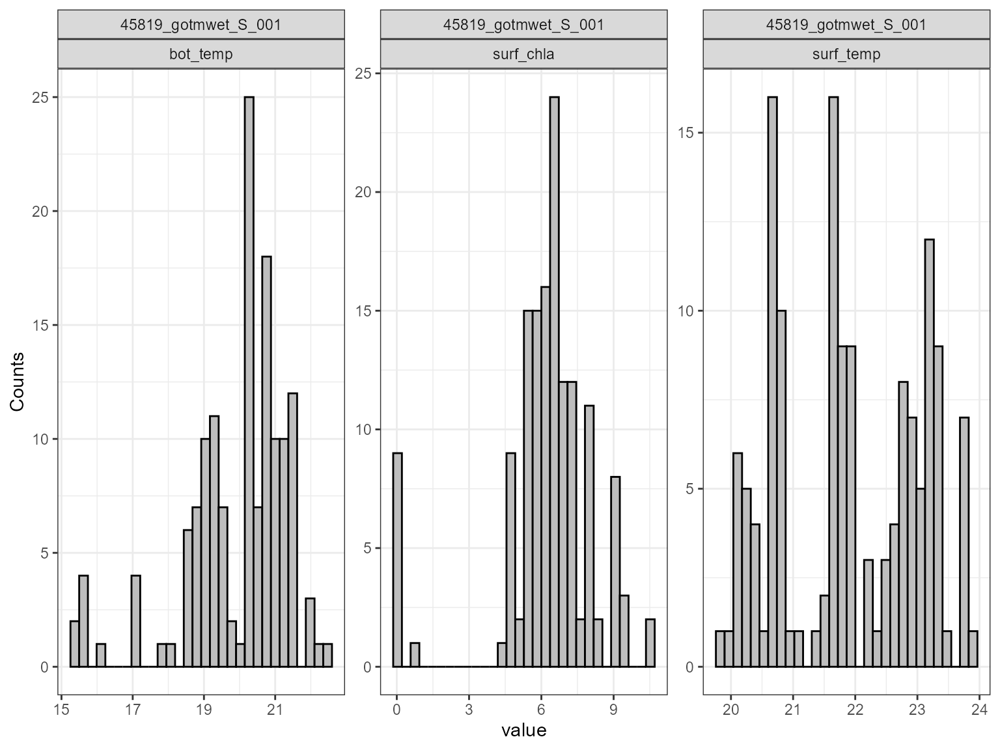
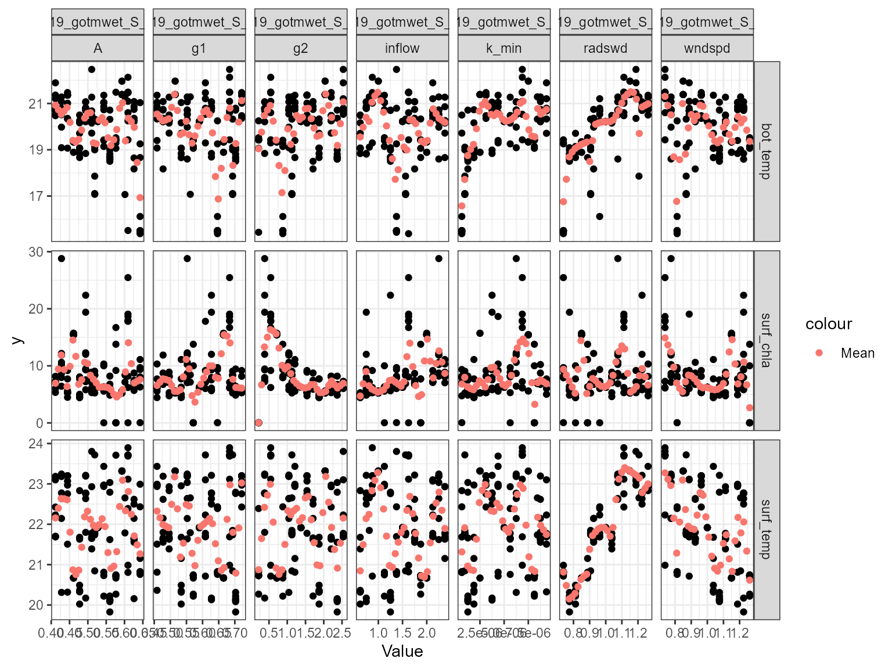
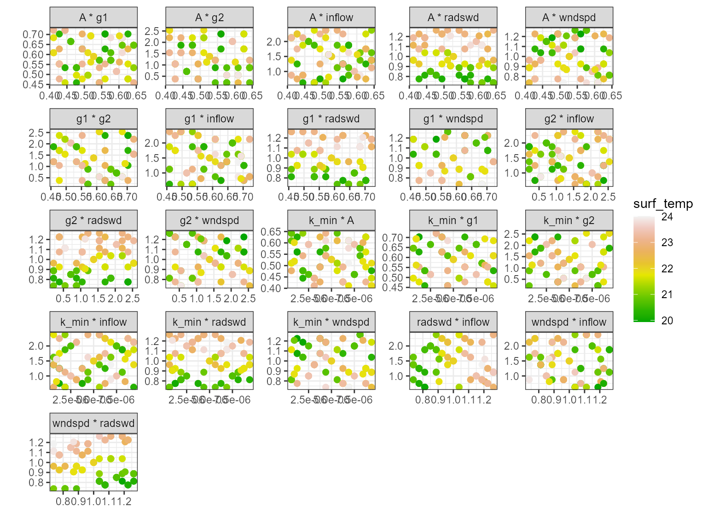
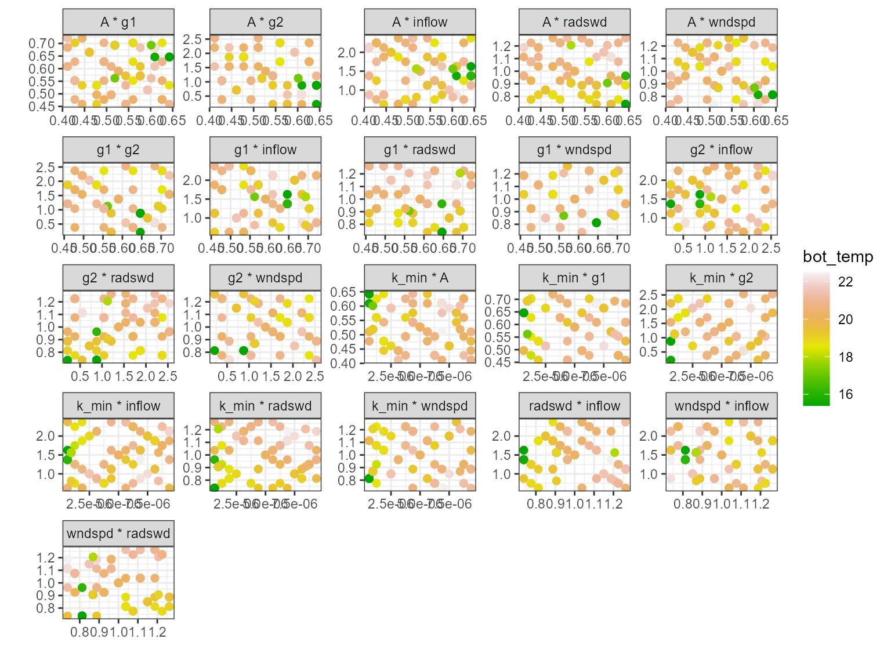
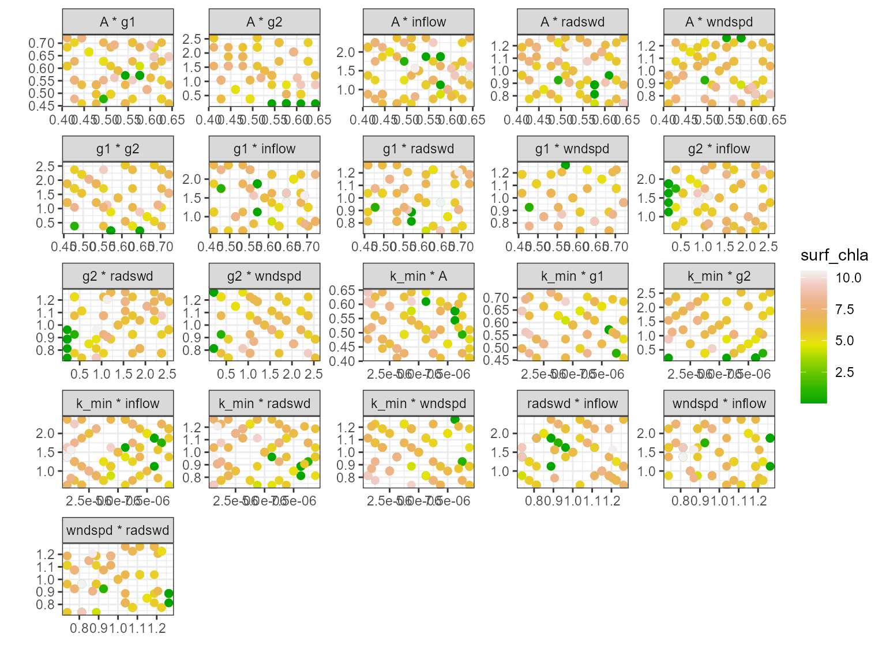

Setup
First, we will load the AEME and aemetools
package:
Create a folder for running the example calibration setup.
tmpdir <- "sa-test"
dir.create(tmpdir, showWarnings = FALSE)
aeme_dir <- system.file("extdata/lake/", package = "AEME")
# Copy files from package into tempdir
file.copy(aeme_dir, tmpdir, recursive = TRUE)
#> [1] TRUE
path <- file.path(tmpdir, "lake")
list.files(path, recursive = TRUE)
#> [1] "aeme.yaml" "data/hypsograph.csv" "data/inflow_FWMT.csv"
#> [4] "data/lake_obs.csv" "data/meteo.csv" "data/outflow.csv"
#> [7] "data/water_level.csv" "model_controls.csv"Build AEME ensemble
Using the AEME functions, we will build the AEME model
setup. For this example, we will use the glm_aed model. The
build_aeme function will
aeme <- yaml_to_aeme(path = path, "aeme.yaml")
model_controls <- AEME::get_model_controls()
inf_factor = c("dy_cd" = 1, "glm_aed" = 1, "gotm_wet" = 1)
outf_factor = c("dy_cd" = 1, "glm_aed" = 1, "gotm_wet" = 1)
model <- c("gotm_wet")
aeme <- build_aeme(path = path, aeme = aeme,
model = model, model_controls = model_controls,
inf_factor = inf_factor, ext_elev = 5,
use_bgc = TRUE)Description of Sensitivity Analysis method
The sensitivity analysis method used here is based on the Sobol
method and uses the sensobol package.
This package provides several functions to conduct variance-based uncertainty and sensitivity analysis, from the estimation of sensitivity indices to the visual representation of the results. It implements several state-of-the-art first and total-order estimators and allows the computation of up to fourth-order effects, as well as of the approximation error, in a swift and user-friendly way.
For more information on the method, see the sensobol package vignette.
Load parameters to be used for the sensitivity analysis
Parameters are loaded from the aemetools package within
the aeme_parameters dataframe. The parameters are stored in
a data frame with the following columns:
model: The model namefile: The file name of the model parameter filename: The parameter namevalue: The parameter valuemin: The minimum value of the parametermax: The maximum value of the parameter
Parameters to be used for the calibration. (man)
utils::data("aeme_parameters", package = "AEME")
param <- aeme_parameters |>
dplyr::filter(file != "wdr")
param| model | file | name | value | min | max | group | index | module | var_sim |
|---|---|---|---|---|---|---|---|---|---|
| glm_aed | glm3.nml | light/Kw | 5.8e-01 | 0.100 | 5.52e+00 | NA | NA | hydrodynamic | HYD_temp|HYD_thmcln |
| glm_aed | met | MET_wndspd | 1.0e+00 | 0.700 | 1.30e+00 | NA | NA | hydrodynamic | HYD_temp|HYD_thmcln |
| glm_aed | met | MET_radswd | 1.0e+00 | 0.700 | 1.30e+00 | NA | NA | hydrodynamic | HYD_temp |
| glm_aed | glm3.nml | mixing/coef_mix_conv | 1.4e-01 | 0.100 | 2.00e-01 | NA | NA | hydrodynamic | HYD_temp|HYD_thmcln |
| glm_aed | glm3.nml | mixing/coef_wind_stir | 2.1e-01 | 0.200 | 3.00e-01 | NA | NA | hydrodynamic | HYD_temp|HYD_thmcln |
| glm_aed | glm3.nml | mixing/coef_mix_shear | 1.4e-01 | 0.100 | 2.00e-01 | NA | NA | hydrodynamic | HYD_temp|HYD_thmcln |
| glm_aed | glm3.nml | mixing/coef_mix_turb | 5.6e-01 | 0.200 | 7.00e-01 | NA | NA | hydrodynamic | HYD_temp|HYD_thmcln |
| glm_aed | glm3.nml | mixing/coef_mix_hyp | 7.4e-01 | 0.400 | 8.00e-01 | NA | NA | hydrodynamic | HYD_temp|HYD_thmcln |
| glm_aed | glm3.nml | sediment/n_zones | 1.0e+00 | 1.000 | 1.00e+00 | NA | NA | sediment | |
| glm_aed | glm3.nml | sediment/sed_temp_mean | 1.2e+01 | 6.000 | 1.80e+01 | NA | 1 | sediment | HYD_temp |
| glm_aed | glm3.nml | sediment/sed_temp_peak_doy | 3.0e+01 | 1.000 | 9.00e+01 | NA | 1 | sediment | HYD_temp |
| glm_aed | inf | inflow | 1.0e+00 | 0.500 | 2.50e+00 | NA | NA | hydrodynamic | LKE_lvlwtr |
| gotm_wet | gotm.yaml | turbulence/turb_param/k_min | 6.0e-07 | 0.000 | 1.00e-05 | NA | NA | hydrodynamic | HYD_thmcln |
| gotm_wet | gotm.yaml | light_extinction/A/constant_value | 5.5e-01 | 0.395 | 6.59e-01 | NA | NA | hydrodynamic | HYD_temp|HYD_thmcln |
| gotm_wet | gotm.yaml | light_extinction/g1/constant_value | 5.9e-01 | 0.440 | 7.40e-01 | NA | NA | hydrodynamic | HYD_temp|HYD_thmcln |
| gotm_wet | gotm.yaml | light_extinction/g2/constant_value | 2.0e-01 | 0.050 | 2.70e+00 | NA | NA | hydrodynamic | HYD_temp|HYD_thmcln |
| gotm_wet | met | MET_wndspd | 1.0e+00 | 0.700 | 1.30e+00 | NA | NA | hydrodynamic | HYD_temp|HYD_thmcln |
| gotm_wet | met | MET_radswd | 1.0e+00 | 0.700 | 1.30e+00 | NA | NA | hydrodynamic | HYD_temp |
| gotm_wet | inf | inflow | 1.0e+00 | 0.500 | 2.50e+00 | NA | NA | hydrodynamic | LKE_lvlwtr |
| dy_cd | cfg | light_extinction_coefficient/7 | 9.0e-01 | 0.100 | 1.40e+00 | NA | NA | hydrodynamic | HYD_temp|HYD_thmcln |
| dy_cd | dyresm3p1.par | vert_mix_coeff/15 | 2.0e+02 | 50.000 | 7.50e+02 | NA | NA | hydrodynamic | HYD_thmcln |
| dy_cd | met | MET_wndspd | 1.0e+00 | 0.700 | 1.30e+00 | NA | NA | hydrodynamic | HYD_temp|HYD_thmcln |
| dy_cd | met | MET_radswd | 1.0e+00 | 0.700 | 1.30e+00 | NA | NA | hydrodynamic | HYD_temp |
| dy_cd | inf | inflow | 1.0e+00 | 0.500 | 2.50e+00 | NA | NA | hydrodynamic | LKE_lvlwtr |
Sensitivity analysis setup
Define fitness function
First, we will define a function for the sensitivity analysis
function to use to calculate the sensitivity of the model. This function
takes a dataframe as an argument. The dataframe contains the observed
data (obs) and the modelled data (model). The
function should return a single value.
Here we use the model mean.
# Function to calculate mean model output
fit <- function(df) {
mean(df$model)
}Different functions can be applied to different variables. For example, we can use the mean for water temperature and median for chloophyll-a.
# Function to calculate median model output
fit2 <- function(df) {
median(df$model)
}Then these would be combined into a named list of functions which
will be passed to the sa_aeme function. They are named
according to the target variable.
# Create list of functions
FUN_list <- list(HYD_temp = fit, PHY_tchla = fit2)Define control parameters
Next, we will define the control parameters for the sensitivity
analysis. The control parameters are generated using
create_control and are then passed to the
sa_aeme function. The control parameters for the
sensitivity analysis are as follows:
?create_control| create_control | R Documentation |
Create control list for calibration or sensitivity analysis
Arguments
method |
The method to be used. It can be either "calib" for calibration or "sa" for sensitivity analysis. |
... |
Additional arguments passed to Common arguments (both methods):
Calibration-only arguments (
Sensitivity-analysis-only arguments (
|
Here is an example for examining surface temperature (surf_temp) in the months December to February, bottom temperature (bot_temp), (10 - 13 m) and also total chlorophyll-a (PHY_tchla) at the surface (0 - 2 m) during the summer period.
ctrl <- create_control(method = "sa", N = 2^4, ncore = 2, na_value = 999,
parallel = TRUE, file_name = "results.db",
vars_sim = list(
surf_temp = list(var = "HYD_temp",
month = c(12, 1:2),
depth_range = c(0, 2)
),
bot_temp = list(var = "HYD_temp",
month = c(12, 1:2),
depth_range = c(10, 13)
),
surf_chla = list(var = "PHY_tchla",
month = c(12, 1:2),
depth_range = c(0, 2)
)
)
)Run sensitivity analysis
Once we have defined the fitness function, control parameters and
variables, we can run the sensitivity analysis. The sa_aeme
function takes the following arguments:
?sa_aeme| sa_aeme | R Documentation |
Run sensitivity analysis on AEME model parameters
Arguments
aeme |
aeme; object. |
model |
vector; of models to be used. Can be 'dy_cd', 'glm_aed', 'gotm_wet'. |
param |
dataframe; of parameters read in from a csv file. Requires the columns c("model", "file", "name", "value", "min", "max", "log") |
FUN_list |
list of functions; named according to the variables in the
|
path |
filepath; where input files are located relative to the current working directory. |
model_controls |
dataframe; of configuration loaded from "model_controls.csv". |
ctrl |
list; of controls for sensitivity analysis function created using
the |
param_df |
dataframe; of parameters to be used in the calibration. Requires the columns c("model", "file", "name", "value", "min", "max"). This is used to restart from a previous calibration. |
The sa_aeme function writes the results to the file
specified. The sa_aeme function returns the
sim_id of the run.
# Run sensitivity analysis AEME model
sim_id <- sa_aeme(aeme = aeme, path = path, param = param,
model = model, ctrl = ctrl, FUN_list = FUN_list)
#> ℹ Extracting variable indices for "gotm_wet" modelled
#> variables "HYD_temp" and "PHY_tchla". [2026-03-02 21:27:46]
#> ✔ Variable indices extracted for "gotm_wet".
#> [2026-03-02 21:27:52]
#> ℹ Starting parallel sensitivity analysis for
#> "gotm_wet" using 2 cores with
#> 144 parameter sets.
#> [2026-03-02 21:27:53]
#> turbulence/turb_param/k_min light_extinction/A/constant_value
#> mean 4.851e-06 0.52760
#> median 5.000e-06 0.52700
#> sd 2.799e-06 0.06984
#> light_extinction/g1/constant_value light_extinction/g2/constant_value
#> mean 0.59460 1.3590
#> median 0.59000 1.2920
#> sd 0.08189 0.6979
#> MET_wndspd MET_radswd inflow
#> mean 0.9965 0.9983 1.4930
#> median 1.0000 1.0000 1.5000
#> sd 0.1619 0.1606 0.5311
#> ✔ Parallel sensitivity analysis for
#> "gotm_wet" completed.
#> [2026-03-02 21:36:13]
#> Writing output for generation 1 to results.db with sim ID:
#> "45819_gotmwet_S_001" [2026-03-02 21:36:13]Reading sensitivity analysis results
The sensitivity results can be read in using the read_sa
function. This function takes the following arguments:
-
ctrl: The control parameters used for the sensitivity analysis. -
model: The model used for the sensitivity analysis. -
path: The path to the directory where the model is configuration is.
# Read in sensitivity analysis results
sa_res <- read_sa(ctrl = ctrl, sim_id = sim_id, R = 10^3)
names(sa_res)
#> [1] "45819_gotmwet_S_001"The read_sa function returns a list for each simulation
id provided. This list contains the following elements:
-
df: dataframe of the sensitivity analysis results. The dataframe contains the model, generation, index (model run), parameter name, parameter value, fitness value and the median fitness value for each generation.
head(sa_res[[1]]$df)| sim_id | model | run | gen | parameter_name | parameter_value | fit_type | fit_value | label |
|---|---|---|---|---|---|---|---|---|
| 45819_gotmwet_S_001 | gotm_wet | 1 | 1 | NA/turbulence/turb_param/k_min | 0.000005 | surf_temp | 21.91650 | k_min |
| 45819_gotmwet_S_001 | gotm_wet | 1 | 1 | NA/turbulence/turb_param/k_min | 0.000005 | bot_temp | 20.23140 | k_min |
| 45819_gotmwet_S_001 | gotm_wet | 1 | 1 | NA/turbulence/turb_param/k_min | 0.000005 | surf_chla | 6.25585 | k_min |
| 45819_gotmwet_S_001 | gotm_wet | 1 | 1 | NA/light_extinction/A/constant_value | 0.527000 | surf_temp | 21.91650 | A |
| 45819_gotmwet_S_001 | gotm_wet | 1 | 1 | NA/light_extinction/A/constant_value | 0.527000 | bot_temp | 20.23140 | A |
| 45819_gotmwet_S_001 | gotm_wet | 1 | 1 | NA/light_extinction/A/constant_value | 0.527000 | surf_chla | 6.25585 | A |
-
sobol_indices: list of the Sobol indices for each variable an it’s senstivity to the parameters.
sa_res[[1]]$sobol_indices
#> $surf_temp
#>
#> First-order estimator: saltelli | Total-order estimator: jansen
#>
#> Total number of model runs: 144
#>
#> Sum of first order indices: 1.006097
#> original bias std.error low.ci high.ci sensitivity
#> <num> <num> <num> <num> <num> <char>
#> 1: 0.5239187106 -0.021517726 4.81427862 -8.890376264 9.98124914 Si
#> 2: -0.0001242286 0.067368700 1.21215715 -2.443277285 2.30829143 Si
#> 3: 0.2738016194 -0.060201388 3.84159936 -7.195393383 7.86339940 Si
#> 4: 0.2643026253 -0.134931846 6.34017288 -12.027276039 12.82574498 Si
#> 5: -0.1305800824 0.050514790 5.41472709 -10.793764952 10.43157521 Si
#> 6: -1.0174274041 -0.075138768 5.93974653 -12.583977905 10.69940063 Si
#> 7: 1.0922061438 -0.005839709 6.85152018 -12.330686930 14.52677864 Si
#> 8: 0.4649087956 0.034390471 0.22615783 -0.012742872 0.87377952 Ti
#> 9: 0.0291207091 0.002539864 0.01153937 0.003964096 0.04919759 Ti
#> 10: 0.2970771772 0.025941990 0.15031713 -0.023480978 0.56575135 Ti
#> 11: 0.7390505326 0.049865126 0.24264630 0.213607400 1.16476341 Ti
#> 12: 0.5027757524 0.047191569 0.17913239 0.104491152 0.80667722 Ti
#> 13: 0.6202750858 0.056890519 0.20767871 0.156341782 0.97042735 Ti
#> 14: 0.8483240934 0.055080880 0.29690898 0.211312311 1.37517412 Ti
#> parameters
#> <char>
#> 1: k_min
#> 2: A
#> 3: g1
#> 4: g2
#> 5: wndspd
#> 6: radswd
#> 7: inflow
#> 8: k_min
#> 9: A
#> 10: g1
#> 11: g2
#> 12: wndspd
#> 13: radswd
#> 14: inflow
#>
#> $bot_temp
#>
#> First-order estimator: saltelli | Total-order estimator: jansen
#>
#> Total number of model runs: 144
#>
#> Sum of first order indices: 9.992956
#> original bias std.error low.ci high.ci sensitivity
#> <num> <num> <num> <num> <num> <char>
#> 1: 0.1951079 0.707183972 3.9245468 -8.20404650 7.1798943 Si
#> 2: -0.1751040 0.536594105 2.6426462 -5.89118940 4.4677932 Si
#> 3: 0.7960785 0.650966614 3.7180097 -7.14205317 7.4322770 Si
#> 4: 4.3683312 0.193709103 4.6855220 -5.00883227 13.3580765 Si
#> 5: 0.9929943 0.467225128 3.9343924 -7.18549821 8.2370366 Si
#> 6: 1.9296969 0.398727034 3.8259123 -5.96768057 9.0296202 Si
#> 7: 1.8858516 0.400347544 4.4207862 -7.17907757 10.1500858 Si
#> 8: 0.5521804 0.029323858 0.2506345 0.03162193 1.0140911 Ti
#> 9: 0.3174816 -0.005799624 0.1889547 -0.04706321 0.6936257 Ti
#> 10: 0.3994266 0.049714567 0.1952485 -0.03296803 0.7323922 Ti
#> 11: 0.8498165 0.053628390 0.3385209 0.13269932 1.4596769 Ti
#> 12: 0.4649502 0.054463104 0.1876114 0.04277549 0.7781986 Ti
#> 13: 0.3713559 0.073272981 0.2149951 -0.12329976 0.7194655 Ti
#> 14: 0.5303853 0.087078572 0.2361150 -0.01947017 0.9060836 Ti
#> parameters
#> <char>
#> 1: k_min
#> 2: A
#> 3: g1
#> 4: g2
#> 5: wndspd
#> 6: radswd
#> 7: inflow
#> 8: k_min
#> 9: A
#> 10: g1
#> 11: g2
#> 12: wndspd
#> 13: radswd
#> 14: inflow
#>
#> $surf_chla
#>
#> First-order estimator: saltelli | Total-order estimator: jansen
#>
#> Total number of model runs: 144
#>
#> Sum of first order indices: 3.101766
#> original bias std.error low.ci high.ci sensitivity
#> <num> <num> <num> <num> <num> <char>
#> 1: 0.08955763 0.0664530768 0.4471491 -0.85329162 0.8995007 Si
#> 2: 0.85489813 0.0239149914 0.9429402 -1.01714573 2.6791120 Si
#> 3: 0.68315885 -0.0186098479 0.7820833 -0.83108642 2.2346238 Si
#> 4: -0.15776731 -0.1466637858 0.9185640 -1.81145588 1.7892488 Si
#> 5: 0.79962026 0.0013477188 0.8615702 -0.89037412 2.4869192 Si
#> 6: 0.28086134 -0.0769042051 0.7365873 -1.08591907 1.8014501 Si
#> 7: 0.55143680 -0.0557278970 0.8900317 -1.13726539 2.3515948 Si
#> 8: 0.11923421 0.0321431991 0.1369800 -0.18138494 0.3555670 Ti
#> 9: 0.75992005 0.0476112085 0.4334899 -0.13731583 1.5619335 Ti
#> 10: 0.42054008 0.0123442152 0.3483112 -0.27448146 1.0908732 Ti
#> 11: 0.61550689 0.0234422909 0.1854208 0.22864655 0.9554826 Ti
#> 12: 0.63192568 0.0008683431 0.3121615 0.01923206 1.2428826 Ti
#> 13: 0.43999402 -0.0003716049 0.1475534 0.15116624 0.7295650 Ti
#> 14: 0.60439755 0.0148085094 0.2264933 0.14567042 1.0335077 Ti
#> parameters
#> <char>
#> 1: k_min
#> 2: A
#> 3: g1
#> 4: g2
#> 5: wndspd
#> 6: radswd
#> 7: inflow
#> 8: k_min
#> 9: A
#> 10: g1
#> 11: g2
#> 12: wndspd
#> 13: radswd
#> 14: inflow-
sobol_dummy: list of the Sobol indices for the dummy parameter.
sa_res[[1]]$sobol_dummy
#> $surf_temp
#> original bias std.error low.ci high.ci sensitivity parameters
#> 1 1.974597 -8.131868e-05 0.03919692 1.897853 2.051503 Si dummy
#> 2 0.000000 7.269674e-04 0.42332393 0.000000 0.000000 Ti dummy
#>
#> $bot_temp
#> original bias std.error low.ci high.ci sensitivity parameters
#> 1 1.79211 0.004648471 0.09625484 1.598806 1.9761179 Si dummy
#> 2 0.00000 0.003624849 0.68230385 0.000000 0.3672023 Ti dummy
#>
#> $surf_chla
#> original bias std.error low.ci high.ci sensitivity parameters
#> 1 0.3410965 0.06636077 0.1872000 0 0.6416410 Si dummy
#> 2 0.0000000 0.01721546 0.7126491 0 0.9773963 Ti dummyVisualising sensitivity analysis results
The sensitivity analysis results can be visualised in different ways
using the functions: plot_uncertainty,
plot_scatter and plot_multiscatter. These
plots are based on the output plots from the sensobol
package.
These functions take the following argument:
-
sa_res: The sensitivity analysis results returned from theread_safunction.
Uncertainty plot
The plot_uncertainty function plots the distribution of
the model output for each variable.
# Plot sensitivity analysis results
plot_uncertainty(sa_res)
#> Dropped 0 NA's from 432 rows for sim_id 45819_gotmwet_S_001
Scatter plot
The plot_scatter function plots the model output against
the parameter value for each variable. This is useful for identifying
relationships between the model output and the parameter value. For
example, the plot below shows that there is a relationship between the
model surface temperature (surf_temp_) and the parameter value of the
scaling factor for shortwave radiation (MET_radswd), and also for
surface chlorophyll-a (surf_chla) and the light extinction coefficient
(light.Kw). When there is a low parameter value for Kw, the model
chlorophyll-a is higher.
plot_scatter(sa_res)
Multi-scatter plot
The plot_multiscatter function plots the parameters
against each other for each variable. The parameter on top is the x-axis
and the parameter below is the y-axis. This is useful for identifying
relationships between the parameters and response variable.
pl <- plot_multiscatter(sa_res)
pl[[1]][1]
#> $surf_temp
pl[[1]][2]
#> $bot_temp
pl[[1]][3]
#> $surf_chla